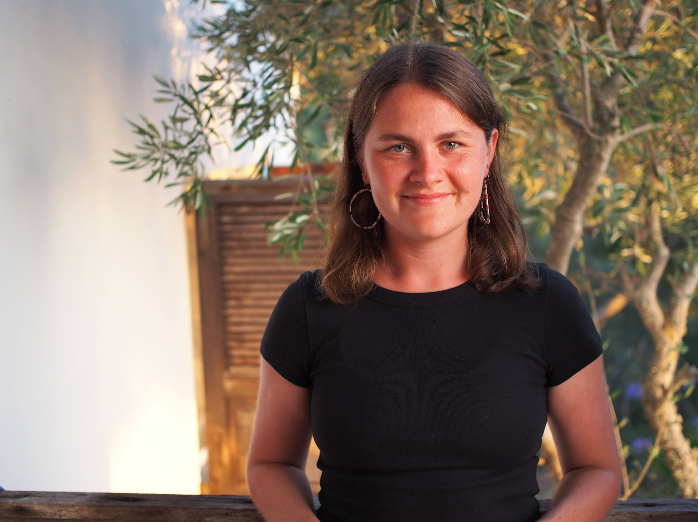

Hello! My name is Bianca, and I ride a Bianchi. My name is Bianca, and I drink Bianca mochas. My name is Bianca, and I am a graduate student at MIT.
In my free time, I like to fix bikes, play ultimate frisbee, and print photos in the darkroom. Here are some books I have read and movies I have watched. I also enjoy making things like this or that.
On a broad level, I care about sustainability, energy systems, and human mobility. On a more specific level, I am interested in dynamics, controls, and using computer science and math to solve relevant engineering problems. Above all, I am passionate about education and social justice.
I did my undergrad at UC Berkeley (go bears!) where I worked in the Environmental Fluid Mechanics and Hydrology lab on quantifying the effect of surface flow on methane emissions from wetlands. During my summers, I did research at the Tecnológico de Monterrey in Mexico on power converters for renewable energy integration and at the Technische Universität Hamburg in Germany on the control of an ocean wave energy converter.
At MIT, I work in the Stochastic Analysis and Nonlinear Dynamics (SAND) Lab where I develop new frameworks to model geophysical systems. I use numerical methods, machine learning, and other data science techniques to build multi-fidelity models that combine sensor measurements with model-inferred dynamics. My goal is to maximize the amount of available data that is used and provide more informed estimates of uncertainty.
"The close, painstaking study of a tiny patch of coast, every eddy and angle, even down to individual rocks, and in every combination of tide and wind and swell—a longitudinal study, through season after season—is the basic occupation of surfers at their local break. Getting a spot wired—truly understanding it—can take years. At very complex breaks, it’s a lifetime’s work, never completed. This is probably not what most people see, glancing seaward, noting surfers in the water, but it’s the first-order problem that we’re out there trying to solve: What are these waves doing, exactly, and what are they likely to do next? Before we can ride them, we have to read them, or at least make a credible start on the job. Nearly all of what happens in the water is ineffable—language is no help. Wave judgment is fundamental, but how to unpack it? You’re sitting in a trough between waves, and you can’t see past the approaching swell, which will not become a wave you can catch. You start paddling upcoast and seaward. Why? If the moment were frozen, you could explain that, by your reckoning, there’s a fifty-fifty chance that the next wave will have a good takeoff spot about ten yards over and a little farther out from where you are now. This calculation is based on: your last two or three glimpses of the swells outside, each glimpse caught from the crest of a previous swell; the hundred-plus waves you have seen break in the past hour and a half; your cumulative experience of three or four hundred sessions at this spot, including fifteen or twenty days that were much like this one in terms of swell size, swell direction, wind speed, wind direction, tide, season, and sandbar configuration; the way the water seems to be moving across the bottom; the surface texture and the water color; and, beneath these elements, innumerable subcortical perceptions too subtle and fleeting to express. These last factors are like the ones that the ancient Polynesian navigators relied upon when, on the open seas, they used to lower themselves into the water between the outriggers on their canoes and let their testicles tell them where in the great ocean they were." - William Finnegan, Barbarian Days
Here is my resume. Reach me at bchamp [@] mit.edu